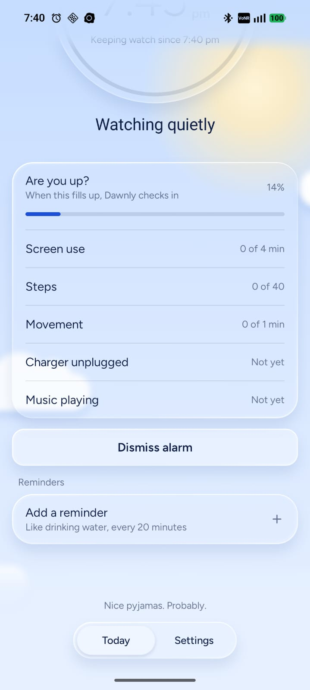
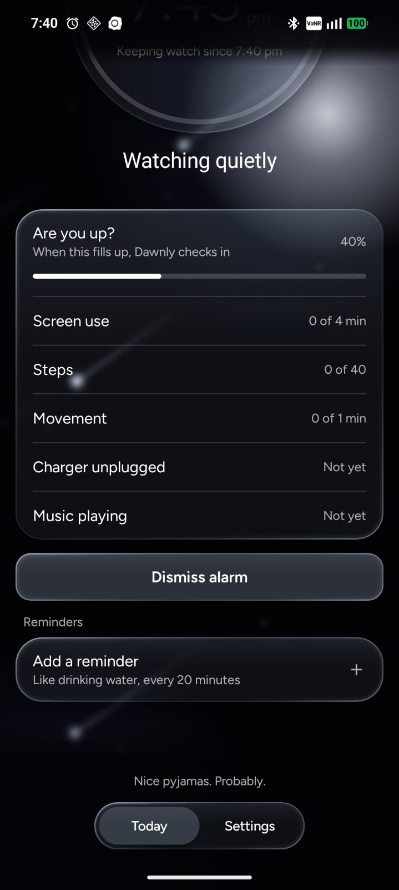

Dawnly notices you're already up and turns your alarm off automatically—whether it was set to wake you or to remind you.


Not every alarm is for waking up. You might set one for a call, a train, a reminder to head out, or the end of a night shift. When the time comes and you're already up and moving, it blares anyway—waking the whole room or cutting into what you're doing.
Dawnly fixes that. It works quietly with the alarms already in your Clock app at any hour, checking if you're active only in the window right before your alarm rings. It dismisses your alarm automatically by giving you a notification. Plus, gentle micro-reminders help you build recurring waking habits throughout the day without disruptive noises.
Three steps, all on your phone. Nothing leaves it.
Works with the Clock app you already use. Day or night, Dawnly never sets alarms of its own.
Only in a custom window you pick, like 30 minutes before. Nothing runs in the background all night.
Screen use, steps, or movement show you're up. Dawnly dismisses the alarm and notifies you—no tap needed.
Set recurring micro-habits and gentle check-ins throughout your waking hours—day or night—without alarming the whole room.
Whether you are up at dawn or working irregular shifts: stay on track with drinking water every 20 minutes, stretching, or resting your eyes. Pick from a range of sound effects, and set reminders for anything—like a nudge so you won't forget your things.
Dawnly isn't on the Play Store yet, so you install it from the file.
Tap Download APK. If Chrome warns you, tap Download anyway.
Open it from your notifications or the Downloads folder.
If asked, allow installs from Chrome (or your file app), then tap Install.
The warning is normal for any app that isn't from the Play Store.
Open Dawnly and it walks you through these. Each one helps it tell you're awake.
So Dawnly can tell you the moment it dismisses your alarm.
Counts your steps in the morning, so walking around counts.
Notices when you start opening apps. If Android says Restricted setting, go to App info, tap the three dots, then Allow restricted settings, and try again.
Set battery to Unrestricted, so your phone doesn't stop Dawnly while it watches.
Android may show a warning or ask for an extra step with Usage access (like "Restricted setting"), but it's totally safe and routine for apps installed outside the Play Store. Dawnly never collects, tracks, or shares your personal data—everything stays 100% on your device.
We never collect, upload, or sell your habits. Everything stays local.
Tested on Nothing, Samsung, Motorola, Redmi and OPPO phones.